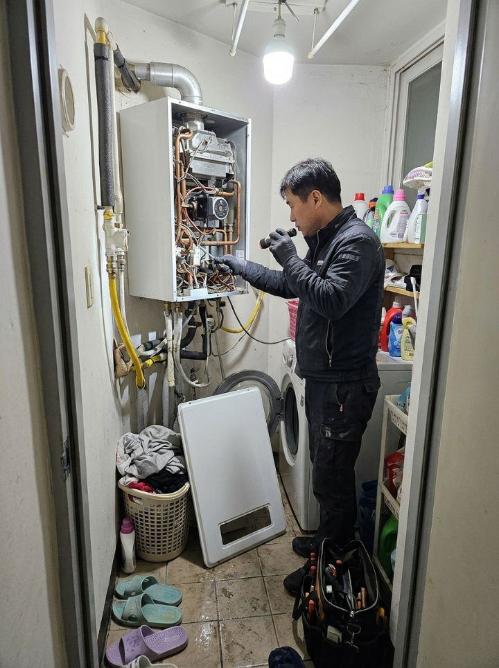

의정부시
보일러 고장
온수·난방 안 될 때
누르면 바로 연결돼요
- 동네 업체 3곳 중 골라서
- 출발 전에 예상 금액 안내

의정부시에서는 이렇게 다릅니다
난방이나 온수가 안 나오거나, 보일러에 에러 코드가 뜨거나, 물이 샐 때 보일러 수리 업체를 연결합니다. 의정부시(민락·신곡·의정부역) 안에서 가까운 업체를 먼저 연결합니다.
의정부시는 의정부역 주변 상권과 원도심, 민락·고산 택지의 신축 아파트가 있는 경기 북부 중심 도시입니다.
원도심은 오래된 다세대와 상가가 많고, 민락·고산 쪽은 입주 10년 안팎 단지가 많으며 겨울이 추워 동파 문의가 많습니다.
신축 아파트는 무상 AS 기간이 남은 보일러가 많습니다. 제조사 서비스센터가 밀릴 때는 연결해 드리지만, 무상 기간 안이면 제조사 접수를 먼저 권합니다.
10년이 넘은 보일러는 부품을 바꿔도 다른 곳이 연달아 고장 나는 경우가 많습니다. 수리비가 교체비의 30%를 넘으면 교체를 고려하는 게 보통이고, 친환경 보일러 지원금이 있는지도 함께 확인해 보세요.
식당·상가는 온수 사용량이 많아 순간온수기나 업소용 보일러를 쓰는 곳이 많습니다. 제품 종류를 알려주시면 맞는 기사를 연결합니다.
생활권별로 보기
의정부역(원도심 상권) 쪽 보일러 고장 출동은 가게 영업 전후로 작업 시간을 맞추는 경우가 많아 원하는 시간대를 먼저 말씀해 주시면 됩니다.
민락·고산(택지 아파트) 쪽 보일러 고장 출동은 입주한 지 얼마 안 된 단지는 하자보수 기간인지 먼저 확인하면 비용을 아낄 수 있습니다.
신곡·장암(아파트 단지) 쪽 보일러 고장 출동은 공용 배관과 이어진 문제인지 세대 안 문제인지에 따라 비용 부담이 달라질 수 있습니다.
가능·녹양(주택가) 쪽 보일러 고장 출동은 오래된 건물이 많아 부품을 같이 바꿔야 할 수 있으니 예상 금액을 출발 전에 꼭 들어 보세요.
- 의정부역
- 원도심 상권
- 민락·고산
- 택지 아파트
- 신곡·장암
- 아파트 단지
- 가능·녹양
- 주택가
전화할 때 알려 주세요
- 증상과 언제부터 그랬는지, 가능하면 사진
- 아파트 단지명과 동·호수, 방문 차량 주차 등록 방법
- 골목 진입이 되는지, 차를 세울 곳이 있는지
- 상호와 영업 시간, 작업 가능한 시간대
- 방문 가능한 시간과 받을 연락처
첫 추위가 오는 10~11월에 보일러를 오랜만에 켜면서 고장이 한꺼번에 몰리고, 한파 때는 동파 접수가 많아 대기가 길어집니다. 가을에 미리 시운전을 해 보면 겨울 고장을 많이 줄일 수 있습니다.
이런 일이면 부르세요
- 난방 안 됨
- 온수 안 나옴
- 에러 코드
- 보일러 누수
- 소음·진동
- 동파
의정부시 보일러 고장 비용
참고 범위예요. 업체가 출발하기 전에 전화로 예상 금액을 먼저 알려드립니다.
업체가 오기 전에
- 에러 코드 확인
보일러 조절기에 뜬 숫자를 사진 찍어 두면 원인을 빨리 압니다.
- 가스·전원 확인
가스 밸브가 열려 있는지, 보일러 콘센트가 빠지지 않았는지 봅니다.
- 보충수 확인
압력계가 1 아래로 떨어져 있으면 물 보충이 필요할 수 있습니다.
가스 냄새가 나면 보일러를 끄고 창문을 연 뒤 가스 공급사에 먼저 연락하세요.
자주 묻는 질문
겨울 밤에도 오나요?
한파 때는 접수가 몰려 대기가 생길 수 있습니다. 가능한 가장 빠른 업체로 연결합니다.
보일러 출장비는 얼마인가요?
점검 출장비는 보통 3만~5만 원이고, 부품 교체 비용은 따로 나옵니다.
아파트 관리사무소에 먼저 연락해야 하나요?
세대 안 고장은 바로 업체를 부르셔도 됩니다. 공용 배관이나 윗집·아랫집과 얽힌 문제는 관리사무소에도 같이 알려 두시면 처리가 빠릅니다. 하자보수 기간 안이라면 시공사 접수가 먼저일 수 있습니다.